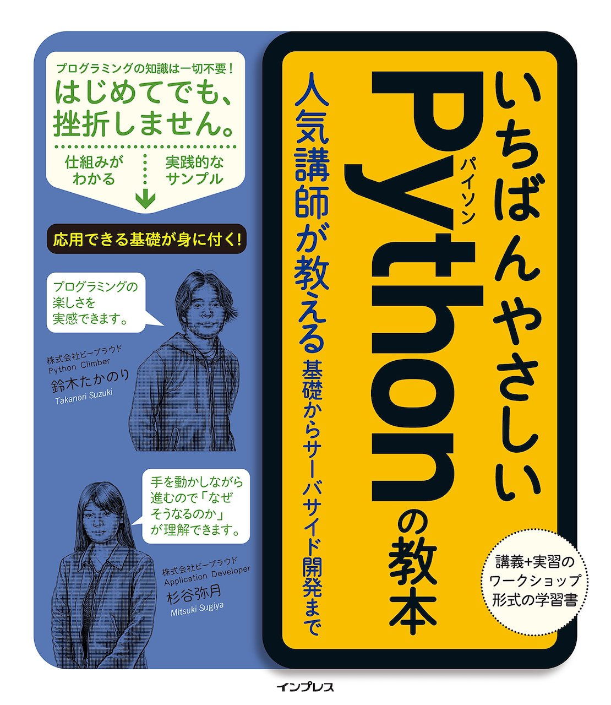
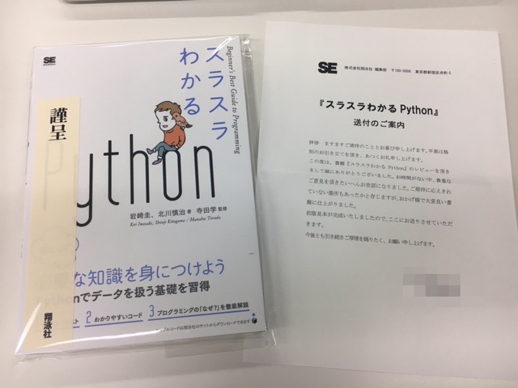

「いちばんやさしいPythonの教本 人気講師が教える基礎からサーバサイド開発まで」を読んだ

いちばんやさしいPythonの教本 人気講師が教える基礎からサーバサイド開発まで という本を読みました。ということで書評的な何かを書きたいと思います。
フルカラー
- 重要なところが目に見えやすい
- 塾みたいなリアル感ある (1週間しか塾いったことないけど)
- フルカラーでこの値段でいいの…？という充実度
実際に触りだすと気になる細かいところまでサポートできてる
- 半角スペースが可視化されてる
- プロンプトの表示について書いてる
- あとあと疑問に思いそうなところも要所々々で解説を入れてる
何度も読み直せる
- 「これは何のためにやるんだ？」と思うところにちゃんと説明があるので読み直す時にもためになる
- 単にPythonの文法を教えるだけじゃなく、 考え方 も教えてくれるので再現性がある
- 1レッスン毎に2~6ページ程と簡潔なので振り返りやすい
雑感
総じてスキがないように感じました。全体を通して、「ああ、それ説明してほしいよね！」って内容を各所に散りばめてくれているなと。
これに加えて、最近話題のPython学習用オンラインサービスのPyQのキャンペーンコードもついてくるのだからお得というしかないのでは….？
+αスラPyとの比較について
「スラスラわかるPython」という書籍のレビュアーを担当しました というBlogも書きましたがどっちがいいかと言われれば、「好み」としか言えないですね。どちらも初心者向けの本ですが、どれだけ良くても「合う合わない」はあると思うのでぜひご自身の目で見比べてえらんで欲しいです。
「スラスラわかるPython」という書籍のレビュアーを担当しました
スラスラわかるPython という書籍が8/7に発売されました。

内容紹介にもありますが、「せっかく覚えたのにこの機能全然使わない！」ということがないので、 「本当にPythonで使われることを学びたい」人にオススメしたいです。
目次
こんな感じの目次です。
- 第1章 Pythonをはじめよう
- 第2章 型とメソッド
- 第3章 条件分岐
- 第4章 リストと繰り返し処理
- 第5章 辞書型
- 第6章 関数
- 第7章 エラーと例外
- 第8章 スクリプト、モジュール、パッケージ
- 第9章 Webスクレイピング
- 第10章 ファイル操作
- 付録
こんな方にオススメ
- はじめてプログラミングを学ぶ人
- プログラミングでどんなことができるか知りたい人
- Pythonに興味がある人
- Pythonチュートリアルを読んで挫折した人
- 必要なことだけを集中して学びたい人
- 「プログラムが書ける！」という実感を得たい人
- 4コマ漫画が好きな人
- etc…
本書はWindows・macOSに対応し、執筆時点で最新のPython3.6.1で解説しています。 Python2と3をどちらを使うべきかも述べられているのでその辺が気になる人もおすすめできます。
オススメしない人
- すでにPythonが書ける人
- 1冊ですべてをカバーしたい人
ですかね。すでに自分で調べて解決できる人向けの本ではないと思います。
雑感
今回書籍のレビューを初めて担当させていただきました。これからPythonプログラミングをスタートする人の手助けになるといいなぁと思います。
みんなのPython勉強会#27 #stapy に参加しました
テーマは「Pythonistaとしての進化」でした。 stapyは初参加でした。
目次
コミュニティの紹介
- Pythonでスタートする人たちとの集い。
- 初心者からマスターまで。
- 言語もPython以外にGo, JavaScriptとかやってる。
- 草の根コミュニティ活動。毎月開催して30回達成予定(11月には)。メンバー2500名を。
- デブサミでもstapyを紹介した。
- 懇親会でビールサーバーがある！？
Talk
Talk 1:「 脱写経のススメ〜書籍のレールから踏み出そう〜 」 杉山 剛（@soogie）
リポジトリ: https://github.com/soogie/moves
すぎやまなんで soogie です。2回目ぐらいからきはじめて、通算20回以上。 PyConJP2017で話そうと思ってたものを話します。
- 写経大事。書いてみてやってみて動かす。
- だけど写経ばかりやってると諸症状が起きる。Iris(アヤメ)とかもういい。分析して面白くない。最近はPython3が主流だからPython2でサンプルが書いてあるとつむ。
- TIPs: Text, Internet, People + なんとかしてやるという強い意志
- ワークフローはあるけど何をやってるかわからない→手でやってみる。簡易なHTMLを書く。 (GET, POST)→その上でPythonで書く。
- 使ったことないもの→ネットを見る→いろんな意見がある→deprecated
- 戻ってきたデータの構造→複数の入れ子の辞書のリストになっている→pandasのread_json()だと1階層しか取れないのでドキュメント確認しながら試す。
- 「こうゆうところでやるデモは失敗するのでプログラムの実行はしません」←わかる
- ネット見る時どこみるか: StackOverFlow,
- 綺麗に書きたくなるが、「まず動く」ようにする。欲しいものが取れるようにする。
- 時間忘れてもがくの大事。
- ネットの情報を見るときは まず公式を見る 公式だけだとわからないところもあるので、QiitaとかBlogも見る。ただ1年以上前の古いものや、バージョン違いには気をつける。
感想: すごい試行錯誤したあとが見れる。こうゆうのJupyter Notebookでやってると振り返れるからいいですね。
Talk 2:「SeleniumでWebと戯れよう」 玉川紘子（株式会社SHIFT）
- ソフトウェアテストエンジニア。お客様が開発したものをテストする。主に自動化・CIを担当。
- Seleniumに関する本も書いてます。
- Webブラウザの操作を自動化できるOSS
- 今日は何の日？→8/9は「ソフトウェアバグの日」です。ちゃんと認定されています!
- Seleniumのバージョン
- 2004年〜 1 or RCはJSベースで、実運用は厳しかった。
- 2011年〜 Googleで開発されていたWebDriverと融合。APIを一新して名前が残った。
- 2016年〜 古いものが削除されスリム化。(←特に大きな機能追加はなし)
- 調べるときはWebDriverで調べてもらったほうがいいかもしれません。
- pyqueryとBeautifulSoupとの違い。
- メリット: 対象のサイトをそんな深く理解しなくてもスクレイピングし易い。Ajax通信であとから表示される要素も習得可能。
- デメリット: 遅い。画面を開き終わってからもタグ情報を集めることも遅い。
- 画面を開くまではSeleniumで、画面を開いたらjsoupで食わせて解析してる。(普段はJavaなので)
- みんな大好きJupyter Notebook!
- Javaでもないかなー。Pythonの人うらやましい。とのこと。←別途カーネルを導入すればJavaもいけそう？
- バッチ実行するために runipy 0.1.5 : Python Package Index を使用。
- 普段Seleniumを使うのは自動テストツールとして。ただSeleniumにはテストの機能はないので、テスティングフレームワークと組み合わせる必要がある。
- 「自動テストを手動で実行する」ほど悲しいことはない。→Jenkins, TravisCI, CircleCIを使おう。
- Seleniumで苦労する点
- 実行時間が長い
- テストがタイミング依存で不安定になることがある。
- 注意しないとすぐに保守コストが爆発→ケースが増えてデザインが変わって即崩壊→共通化して保守しやすくする。
- バランスに気をつけることが大事。理想は「テストのピラミッド」。少しずつ変えていこう。
- 画面キャプチャは制限があって、今見えている範囲しか取れない。
感想: Pythonの勉強会でJavaのテストを実行したばかりにデモが失敗するだと….
Talk 3:「 Pythonの会社を9年間経営してきて分かったこと〜Pythonistaの仕事、Pythonとの良いかかわりかた 」 佐藤治夫（株式会社ビープラウド代表取締役社長, @haru860）
ハイライト
司会「Python界の巨人！」haruoさん「！？」司会「失礼しました。中日でした。」 #stapy
Pythonの人たちってこんな感じだったというのを紹介します。
Pythonを採用した当時(2008年): Webの受託開発がメイン。技術者いるの？保守は？仕事あるの？
Pythonのパラドックス: ←採用をはじめたとき実は知らなかったそう。
この人どうよ。このアメリカ人どうよ。このJavaScriptできる人どうよ→どやどやと入ってきた。2011年で30人超。
今までのPythonの集大成。
会社がPythonコミュニティ化した。
- 同じことに共感
- 最新の情報の交換、ノウハウ・技術交換
- お互いに切磋琢磨
採用費: 5万円がMAX(それでも4人取れた)
仕事も良いお客さんばかりになった。
Pythonistaのしごとでの文化
- どの言語を選択するか？→宗教戦争に近い。何が好きかという話になる。
Pythonistaの特徴
- まずルールを決めよう→Zen of Pythonに書いてある。そのほうが動きやすい。
- ドキュメントを書くのが好き→Zen of Python 暗示するより明治するより
- 曖昧な発言は諭される→これとかあれというと「なにが？」と突っ込まれる。←わかる。
Pythonの効果的な学び方
写経: 書き写す過程でこれはどうゆう意味か考える。そのまま移したつもりでの差。理解。
PyQ: 書籍連動のコラボとかいいですね。次へのステップがあるのはありがたい。
https://twitter.com/haru860/status/895458444047663104
アウトプットする:
- 1行でも10分でもいいから書く。
- Pythonやりたいと言って伸びた人は実経験はなくても、自分で何かつくったりする人。「インストールしました」だけだと微妙かなと。
- Blog書く。プロとアマの違いは形式知にしているか。
- 1行でも10分でもいいから書く。
コミュニティに参加すること。←書かれている情報は古い。実際のところどうなのかを聞けるチャンス。
個人ブランディング
- QiitaよりはBlog。技術的なことはかけるが、個人ブランディングは難しい。
- GitHub
- 発表: 何か話せることはないかなというのを日々考えながらいるといい。
- ブラグ書くなら、ライティングも勉強することも楽。→エンパシーライティング
感想: 反応のスピードがさすがでした。
https://twitter.com/kashew_nuts/status/895246194640736256
懇親会
GitHub, SSH, 発表内容について, 社内でのPython活用事例についてとか話してました。
https://twitter.com/takanory/status/895226497211875330
て感じでアドバイス貰っていたのでビールは3杯飲めましたが、話に夢中になってたらピザとか何も食べてなかった…
雑感
聴講型の勉強会は導入にはいいけどその後自分の手を動かさないと、「何かやった感だけあって何もしてない」ということになりかねないので、そこで何を得たいのか明確にするのが大事だよなーと思った。少なくとも前に出てる人は手を動かして行動してる人たちだ。